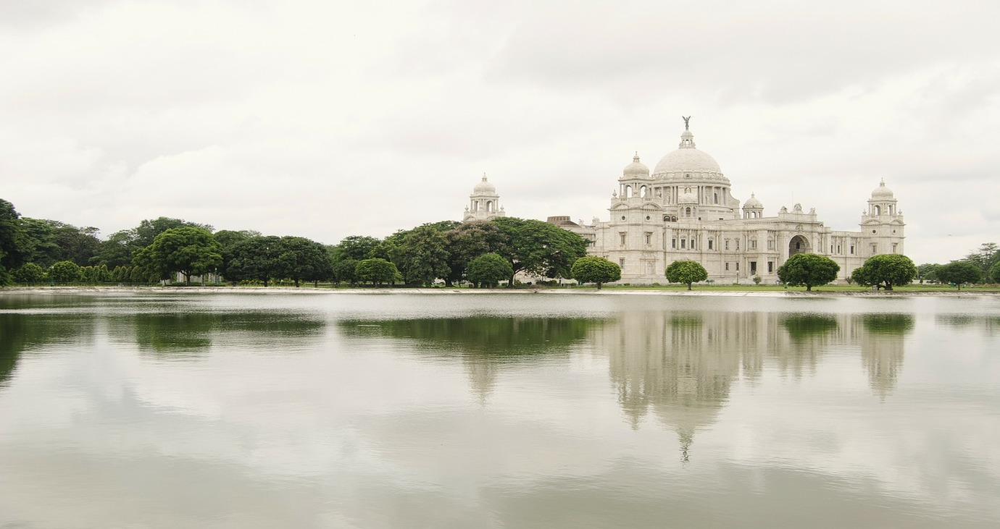
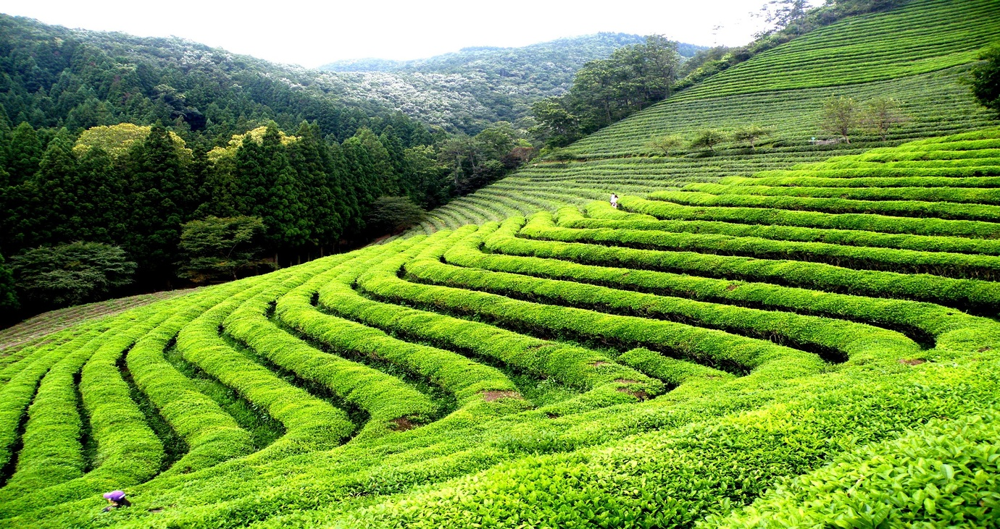
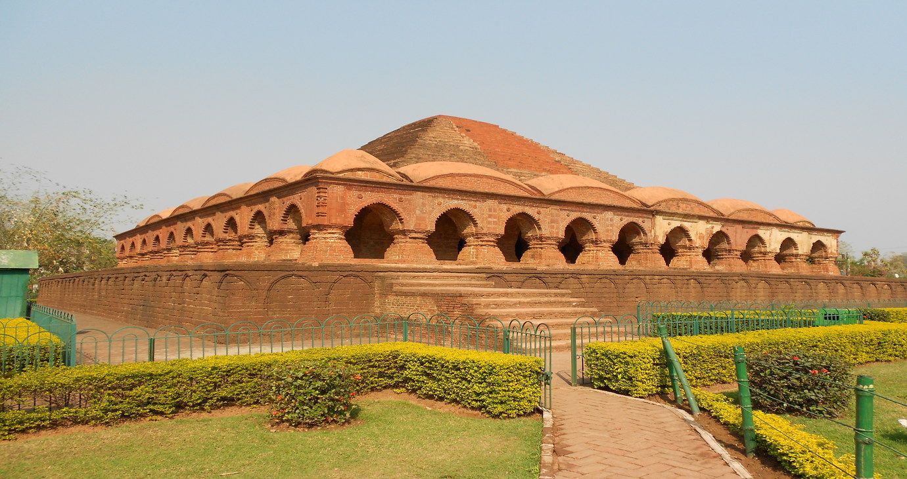
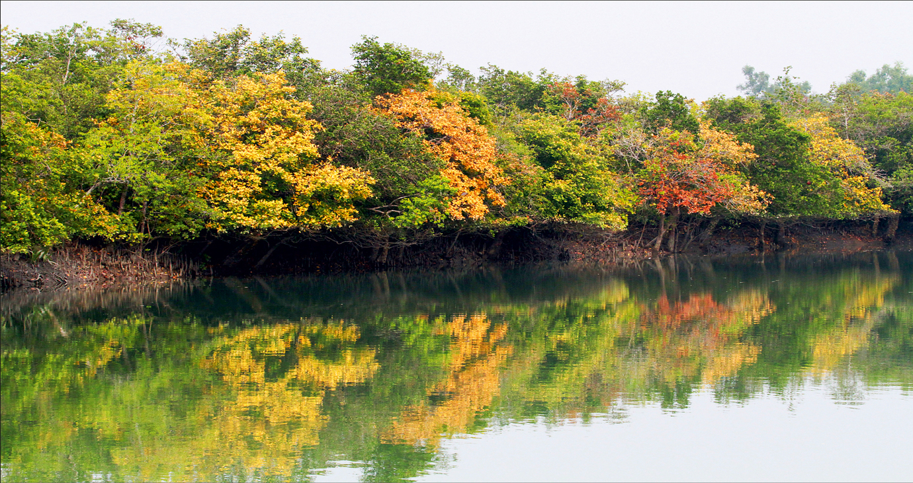
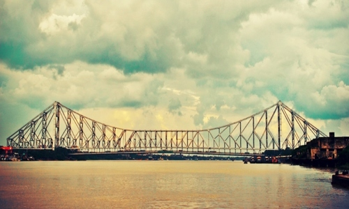
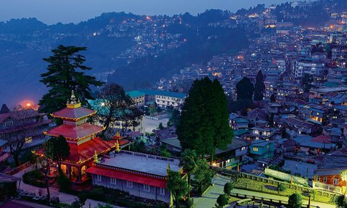
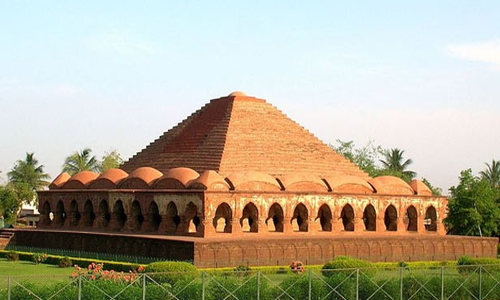
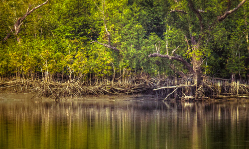

Kolkata
Kolkata, the capital of West Bengal, is the largest metropolitan city in India. This ancient city is considered to be inhabited for more than two thousand years and it is evident from its rich cultural background and diverse
ethnicity
Darjeeling
Darjeeling is the most perfect place to unwind on your holiday.
Snow clad mountains, lush greenery and the stunning views of Himalayas make the place a heaven on earth.
Bankura
Bankura is on the west of the state of West Bengal. Apart from the historic side, Bankura has an artistic face too. It has tourist attractions that boast of its historical importance and destinations that challenge you to trek
and hike.
Sundarban
Here is what makes West Bengal eligible for praises, the Sundarban. The world’s largest delta and also the largest Mangrove Forest
Close ×
Kolkata

Kolkata is the capital of the Indian state of West Bengal. Located on the east bank of the Hooghly River, it is the principal commercial, cultural, and educational centre of East India, while the Port of Kolkata is India's oldest
operating port and its sole major riverine port.
In 2011, the city had a population of 4.5 million, while the population of the city and its suburbs was 14.1 million, making it the third-most populous metropolitan area in India. Recent estimates of Kolkata Metropolitan Area's
economy have ranged from $60 to $150 billion (GDP adjusted for purchasing power parity) making it third most-productive metropolitan area in India, after Mumbai and Delhi.
Darjeeling
Darjeeling is a town and a municipality in the Indian state of West Bengal. It is located in the Lesser Himalayas at an elevation of 6,700 ft (2,042.2 m).

It is noted for its tea industry, its spectacular views of the Kangchenjunga, the world's third-highest mountain, and the Darjeeling Himalayan Railway, a UNESCO World Heritage Site. Darjeeling is the headquarters of the Darjeeling
District which has a partially autonomous status within the state of West Bengal. It is also a popular tourist destination in India.
The recorded history of the town starts from the early 19th century when the colonial administration under the British Raj set up a sanatorium and a military depot in the region. Subsequently, extensive tea plantations were
established in the region and tea growers developed hybrids of black tea and created new fermentation techniques. The resultant distinctive Darjeeling tea is internationally recognised and ranks among the most popular black teas in
the world.
Bankura
Bankura district is an administrative unit in the Indian state of West Bengal. It is part of Medinipur division—one of the five administrative divisions of West Bengal.

Bankura district is surrounded by Bardhaman district in the north, Purulia district in the west and Paschim Medinipur district in the south and some part of Hooghly district in the east. Damodar River flows in the northern part of
Bankura district and separates it with the major part of Burdwan district. The district head quarter is located in Bankura town.
The district has been described as the "connecting link between the plains of Bengal on the east and Chota Nagpur plateau on the west." The areas to the east and north-east are low-lying alluvial plains while to the west the surface
gradually rises, giving way to undulating country, interspersed with rocky hillocks.
The Sundarbans

The Sundarbans is a vast forest in the coastal region of the Bay of Bengal, considered one of the natural wonders of the world, it was recognised in 1997 as a UNESCO World Heritage Site. Located in the delta region of Padma, Meghna
and Brahmaputra river basins, this unique forest area extends across South 24 Parganas and, North 24 Parganas districts of West Bengal State, India and Khulna, Satkhira, Bagerhat districts of Bangladesh. The Sundarbans is the world's
largest coastal mangrove forest, with an area of approximately 10,000 sq km; of which approximately 6,000 sq km is situated in Bangladesh and approximately 4,000 sq km in India. The Bangladeshi and Indian parts of the Sundarbans,
while in fact adjacent parts of the uninterrupted landmark, have been listed separately in the UNESCO World Heritage List: as "Sundarbans" and "Sundarban National Park" respectively. The Sundarbans are a network of marine streams,
mud shores and mangrove forests. The region is known to contain numerous species of animals, birds and reptiles, including Royal Bengal Tiger, Chital Deer, Crocodile and Snakes . On 21 May 1992, the Sundarbans was recognized as a
Ramsar Site of ecological importance.